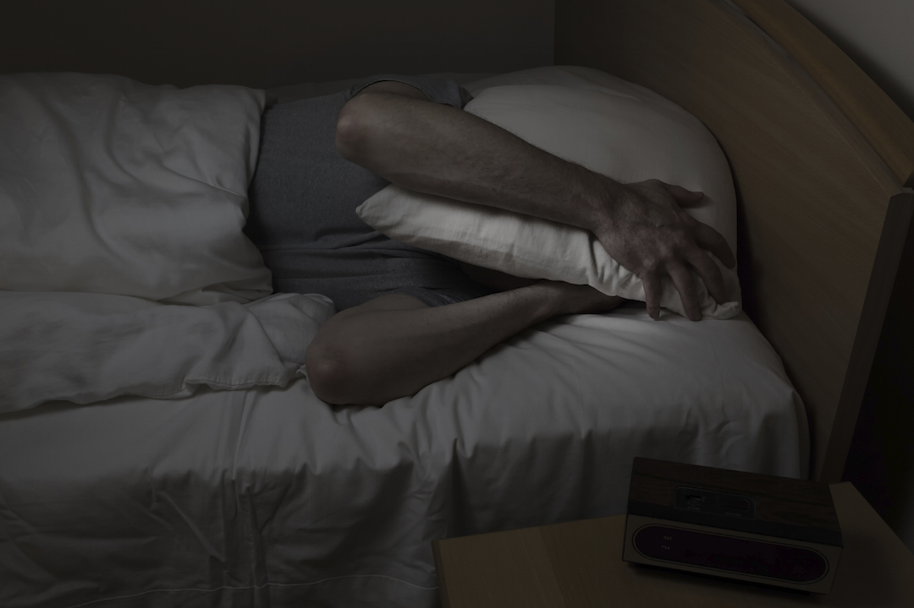

Here are a few examples of frequent sleeping problems.
Insomnia causes poor quality sleep, including difficulty falling asleep, waking during the night, and waking up too early in the morning.
It affects a person's day because they experience fatigue, irritability, moodiness, and difficulties with memory or concentration.
Insomnia is often the result of poor lifestyle habits, such as an irregular routine or a loud environment, which have a negative impact on sleep.
Anxiety usually causes difficulty falling asleep, as the person has a hard time relaxing due to many thoughts and worries running through their mind when going to bed. Depression causes a person to wake up during the night, as well as too early in the morning. Insomnia is often the first sign of depression.
Snoring can disrupt sleep. It is also highly disruptive for the sleeper's partner.
Snoring is a vibration that occurs in the soft palate, throat and nose when breathing in air. Snoring is caused and exacerbated by a number of factors, such as a deviated septum, excess weight, and aging.
Sleep apnea is when normal breathing is repeatedly interrupted during sleep. These "apnea" are related to an obstruction of the throat in the pharynx. Sleep apnea consists of several dozen, even several hundred, of these apnea that occur over the course of a same night. They often cause just as many "arousals". However, the patient does not usually remember these "arousals" and does not complain of poor sleep.
Sleep apnea is usually characterized by snoring (particularly loud snoring, which occurs nightly and throughout the night), a feeling of not being well-rested (upon waking up in the morning, and a tendency to fall asleep as soon as the environment is no longer stimulating), but also excess weight.
Other symptoms are often present with sleep apnea, such as: high blood pressure; difficulties with memory and concentration; mood issues such as irritability; decreased libido; increased urine production during sleep, with a need to go to the bathroom once or several times a night.
Also known as "periodic limb movement disorder", this condition usually occurs in adulthood. The spasms begin in the legs and spread to the upper limbs and other areas of the body. These are involuntary movements that occur during sleep. The patient is usually unaware of them.
Narcolepsy is a rare condition that usually begins in young people and is characterized by an excessive need to sleep during the day. It can be extremely intense and cause an almost uncontrollable need to fall asleep, even when fully active.
This condition can have a significant impact on a person's social, family, professional and school life. It can also cause work and traffic accidents.
This condition can take several forms: advance sleep phase disorder is characterized by an irresistible need to go to sleep early in the evening (8-9 p.m.) and to wake up early in the morning (4 or 5 a.m.), with it being impossible to fall back asleep. Inversely, there is delayed sleep phase disorder.
Another phenomenon is "jet lag", which occurs when changing several time zones while traveling. It takes approximately one day per hour of time difference to recover. Jet lag when traveling west is easier for the body to adapt to than jet lag when traveling east.
Sleepwalking is when a sleeper carries out more or less elaborate automatic movements and behaviors when asleep (typically sitting on the bed or walking), and is not aware of doing so.
Sources:
Results from the "Prise en charge du patient adulte se plaignant d’insomnie en médecine générale" published by the French National Authority for Health (Haute Autorité de Santé) - Recommendations from the Société Française de Recherche et Médecine du Sommeil - Recommendations from the Réseau Morphée - National Commission on Sleep Disorders Research (NCSDR). Insomnia: assessment and management in primary care. Sleep 1999; 22 (Suppl2): S402-408 - Baillargeon L. Behavior and cognitive treatments for insomnia. An alternative to pharmacotherapy. Can Fam Physician. 1997 Feb; 43:290-6 - Recommendations from the Food and Drug Administration - The Harvard Medical School Guide to A Good Night’s Sleep - American Academy of Sleep Medicine - Epstein DR, Bootzin RR. Insomnia. Nurs Clin North Am. 2002 Dec; 37(4):611-31 - Smith MT, Neubauer DN. Cognitive behavior therapy for chronic insomnia. Clin Cornerstone 2003; 5(3) 28-40